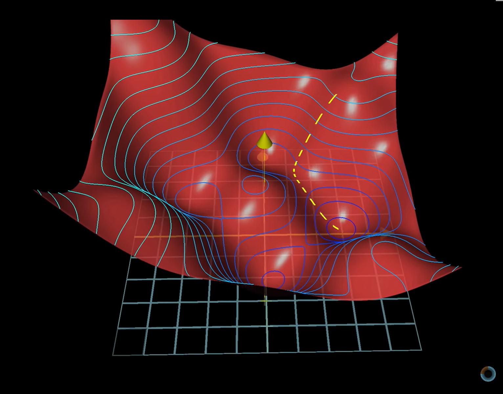
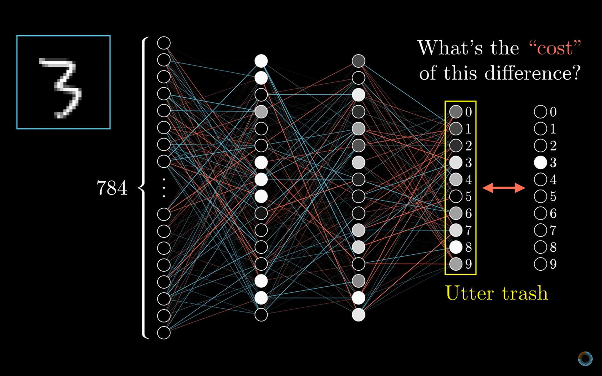
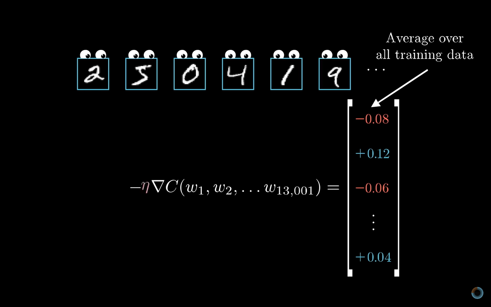

12.3 Training Neural Networks
An intuitive look at the forward and backward pass.
These notes walk through the lecture slides. The original deck is unchanged; use (slides) on the course hub if you want that PDF.
Figures and notes follow Géron, Hands-On Machine Learning; Deisenroth, Faisal, and Ong, Mathematics for Machine Learning; Theodoridis; and 3blue1brown.
1. Training is optimization
Find weights and biases that minimize a loss. The loss measures how far predictions sit from the targets.

2. Forward propagation
Input walks through the net, layer by layer. Each layer: linear map, then activation. One layer’s output is the next layer’s input. The last layer is the prediction.

3. Loss
Compare predictions to targets with a loss function. That scalar is how well the model is doing on the training batch.
4. Backpropagation
Chain rule: derivatives of the loss with respect to every weight. Those gradients say how to nudge the weights to reduce the loss.

Then gradient descent (SGD, Adam, …) updates the weights. The learning rate scales the step. Repeat.
5. Iterate, then evaluate
One cycle is: forward pass, loss, backward pass, weight update. Repeat for a fixed number of epochs, or until you stop. The net learns features and parameters that predict better.
Evaluate on a held-out validation set. Accuracy, precision, recall, F1 are typical metrics.
Practice
-
Training a net means minimizing something. What two groups of numbers are you changing, and what scalar are you driving down?
-
Why keep the intermediate activations from the forward pass if you already have the prediction?
-
Name the four steps that repeat each epoch, in order.